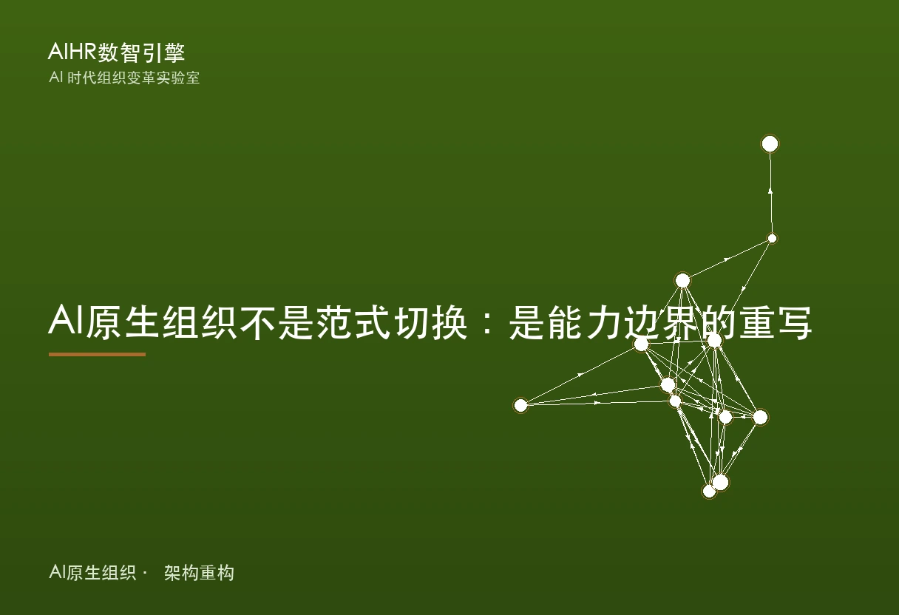

DeepSeek 崛起：一家对冲基金养出的 AI 实验室，凭什么绕过 VC 和科层
2025 年 1 月 20 日 DeepSeek 发布 R1，一个开源权重的推理模型，性能对标 OpenAI o1，训练成本却只有对手的零头。外界把它讲成中国 AI 逆袭的故事，但真正值得 HR 和一号位看的，是它背后的组织设计：一家量化对冲基金在 2023 年分出一支不赚钱的实验室，不开外部董事会、不拿 VC 的钱、用扁平到只有两个层级的结构，把一群平均年龄不到 30 岁的研究员推上了全球大模型第一梯队。本文拆这套结构，以及它对普通企业哪些能抄、哪些抄不了。

核心结论
DeepSeek 的崛起不是靠某个天才或某笔融资，而是靠一套把研究从资本压力和组织惯性里解耦的结构：母公司幻方提供无稀释的资金与算力、不开外部董事会、人才靠开源声誉而非高薪、扁平到只有两个层级。对一号位的可迁移点在于，长期主义首先是资本结构问题，不是文化口号。
关键数据
- 2023 年 5 月成立，由幻方量化（High-Flyer）分拆、全资供养，不拿外部 VC 投资（美联社 / 雅虎财经 / 36 氪）
- 幻方量化 2019 年管理规模已超 100 亿元人民币（约 14 亿美元），美联社 2025 年报道其约 80 亿美元；梁文锋 2021 年起囤卡，美国限制前已拿到约 1 万张 A100（美联社 / 金融时报）
- 2024 年 5 月 6 日发 V2，首次引入 MLA（多头潜在注意力）与 DeepSeekMoE，并在国内引发大模型价格战（DeepSeek 技术报告 / 美众议院证词）
- 2024 年 12 月 26 日发 V3：总参数 6710 亿、每 token 激活 370 亿，论文披露单次训练成本 557.6 万美元（278.8 万 H800 GPU 小时，不含研发与基建）；采用 FP8 混合精度、多 token 预测、无辅助损失负载均衡（DeepSeek 技术报告）
- 2025 年 1 月 20 日发 R1：首个对标 OpenAI o1 的开源权重推理模型，采用 MIT 许可；其低成本使英伟达在 2025 年 1 月 27 日单日市值蒸发约 6000 亿美元（美众议院证词 / 公开报道）
- 组织规模：研究团队约 100 多人、全公司早期约 150 至 160 人；梁文锋与研究员之间只隔一个层级；几乎不社招，以应届生与实习生留任为主，参与者中超 7 成小于 30 岁、超 7 成是本科或硕士（晚点 / 腾讯新闻梳理）
2025 年 1 月 20 日，DeepSeek 发布 R1。这是一个开源权重的推理模型，论文称其数学、代码与推理能力对标 OpenAI 的 o1，而训练成本只有对手的零头。一周后，英伟达单日市值蒸发约 6000 亿美元，市场第一次认真把这家杭州实验室和硅谷巨头放在同一张牌桌上。
但把 DeepSeek 讲成「中国 AI 逆袭」的故事，会漏掉真正有价值的部分。逆袭靠的是模型，模型背后是一套少有人拆解的组织设计：一家量化基金在 2023 年分出一支不赚钱的实验室，不开外部董事会、不拿 VC 的钱、用扁平到只有两个层级的结构，把一群平均年龄不到 30 岁的研究员推上了第一梯队。
这套结构对 HR 和一号位的意义，不在「我们也该做大模型」，而在它把几个被大多数公司讲成文化口号的东西，做成了资本结构和资源结构。
幻方量化为什么愿意养一个不赚钱的 AI 实验室
幻方量化是一家靠数学和 AI 做二级市场投资的对冲基金，2019 年管理规模已超 100 亿元人民币。它不靠 DeepSeek 赚钱，DeepSeek 也不向幻方分红。这种「母公司供养、子公司不回馈现金」的结构在商业上很反常，但它解决了一个根本问题：研究不需要对季度营收负责。
梁文锋 2023 年对 Waves 说，目前巨头和创业公司都没有不可逾越的领先，OpenAI 铺了路，大家都在用公开论文和开源代码。他的判断是，既然路径是公开的，拼的是长期投入和组织能力，而不是某个秘密。把这句话翻成组织语言：如果研究的终点是要尽快变现还 VC，它就会在每一个节点被商业化节奏绑架。幻方用「不指望它赚钱」换来「可以一直投」。
这不是慈善，是一次明确的边界划分。母公司有自己的利润来源，所以子公司不需要为母公司的现金流负责；子公司只对所做的研究负责。两个主体之间断开了财务脐带，反而让研究获得了不被打扰的空间。
一万张 A100 提前囤下的不是显卡，是战略缓冲
2021 年起，梁文锋在幻方体系内开始囤卡，美国 2022 年限制前已拿到约 1 万张 A100。这使得 DeepSeek 起步就有别人要花大钱租或买不到的算力。这点常被讲成运气或远见，但对组织设计更关键的含义是：算力前置让扁平实验室成为可能。
当一个研究员想试一个想法，不需要走预算审批、不需要等采购、不需要向业务线证明 ROI，他直接调集群。DeepSeek 内部的说法是「每个人对卡和人的调动不设上限，有想法随时可以调用训练集群、无需审批」。资源无界是它扁平结构的物理基础。没有这张卡，所谓人人可调用算力就是空话。
组织设计的很多「文化」，本质是被资源结构撑起来的。一个公司如果调一次算力要三层签字，它再怎么提倡扁平，实际运转也是科层的。DeepSeek 的平，是先有「想做就能做」的资源结构，再有「不用审批」的工作方式。
不拿 VC 的钱、不开外部董事会，研究节奏怎么保住
DeepSeek 没有外部董事会，没有投资人席位，没有对赌和上市时间表。这意味着它没有「必须在第 N 轮前证明商业化」的结构性压力。对 HR 的启示不在「我们也别拿投资」，而在：一个组织的长期主义，首先是资本结构问题，不是文化口号问题。当董事会里坐着要退出的基金，研究节奏迟早要让位于交付节奏。
OpenAI 的教训正好反过来。它为了融资反复在治理层打补丁，最后把使命保护从激励层撤到一股无经济权益的 Class N 股上。DeepSeek 从一开始就没有这个补丁需求，因为它压根没引入那类股东。代价是它也放弃了用股权融资快速扩张的通道。这是取舍，不是免费午餐。
很多公司学 DeepSeek 的「长期主义」，却保留着季度对投资人交代的董事会。结构没改，口号改了，结果只会是口号先垮。要判断一个组织是不是真长期主义，看它研究的钱来自哪里、要对谁的利润表负责，比看它的价值观宣言准得多。
不挖明星、只招应届生：DeepSeek 的人才逻辑
梁文锋的用人原则：看能力不看经验，经验超过 8 年直接 pass，超过 5 年要特别出色才考虑。团队以应届生和实习生留任为主，参与者中超 7 成小于 30 岁、超 7 成是本科或硕士。逻辑是，前沿探索需要不被经验绑架的人。一个习惯用旧方法找答案的资深者，在高度不确定的方向上反而可能是负担。
但支撑这套打法的不是高薪，而是两样东西。一是开源带来的行业声誉，做出的东西全世界看得到；二是不设 KPI、不赛马、资源无界的工作环境。年轻人用大厂约 1/10 的人数、约 1/2 的人均工作时间，做出第一梯队的结果。MLA 这个关键架构，最初就是一位年轻研究员的兴趣项目，团队看到潜力后专门组队、用几个月把它变成现实。
注意，这依赖强筛选。梁文锋说靠价值观一致和「管理者以身示范」，而不是成文的制度。换句话说，它没有用流程保证一致性，而是用招聘和创始人示范来保证。扁平和自由是筛选出来的，不是培训出来的。多数公司抄「不写 KPI」却保留宽松的招聘标准，最后得到的不是自由，是散架。
把模型开源当成组织战略，而不只是技术善意
DeepSeek 把 V2、V3、R1 的权重陆续开源，R1 采用 MIT 许可，这在商业大模型公司里很少见。从组织角度看，开源是一根极低成本的顶级人才杠杆：研究员的工作被全球看见，招聘时不靠薪资讲故事，靠「你做的东西会上 Hugging Face 榜首」讲故事。它还顺带解决了信任问题，外界愿意相信它的 benchmark，因为权重可核验。
更重要的是，开源让 DeepSeek 不必过早背上商业化 KPI。闭源模型公司必须尽快把 API 变成收入，收入压力会反向塑造研发优先级。开源权重公司可以把研究影响力当核心指标，这和它的扁平、无 KPI 结构是自洽的。这不是技术善意，是和资本结构、人才策略、组织节奏咬合的一套系统选择。
普通企业当然不能把核心模型开源，但「让年轻人的工作被看见、被认可」这根杠杆是低成本且可学的。很多公司的创新项目死掉，不是因为人不行，是因为做得好没人知道、做得差也没人关心，工作本身没有提供声誉反馈。
这套组织设计哪些能抄，哪些抄不了
先说抄不了的。幻方那种不指望回报的母公司、美国限制前囤到的 1 万张 A100、梁文锋既是一号位又亲自写代码定架构的个人特质，这些是特定条件和特定人，不可复制。把 DeepSeek 的成功归因到「梁文锋看得准」，等于把原因推给运气。
能迁移的有四条。
第一，长期主义先问资本结构。如果你的研究要对季度营收负责、要对投资人退出负责，先改这个，再谈文化。结构不改，文化口号撑不过一次财报。
第二，资源前置换协调成本。想让团队扁平、快速试错，先保证「想做就能调资源、无需层层审批」是真的，而不是贴在墙上的口号。审批链本身就是科层。
第三，人才杠杆可以用透明替代高薪。不是每家公司都能开源核心模型，但让年轻人的工作被看见、被认可，是低成本且可学的。声誉反馈比奖金更能留住自驱的人。
第四，不设 KPI 的组织只能活在特定条件。资金无忧、使命清晰、小而精、筛选极严。条件不满足时，强行去 KPI 只会换来失控，不是自由。
对一号位最实在的一句话：DeepSeek 的平，是钱、卡、人、创始人四件事同时到位才平下来的。只抄扁平两个字，抄的是结果不是原因。
结语：三个可以对照的问题
DeepSeek 还没有经历规模扩到几百人后还平不平得下来的检验，梁文锋本人也说会谨慎扩大核心研发团队。它的组织目前是被小规模和强筛选撑住的，放大之后会不会重新长出层级，还没有答案。
但它已经证明一件事：在 AI 这种高不确定、长周期、靠好奇心的领域，把研究从资本和组织惯性里解耦，比砸更多人头和更多 KPI 更有效。一号位可以对照三个问题：你的研究或创新团队，要对谁的利润表负责；他们想试一个想法，要过几道审批；如果明天不来上班，组织的创新节奏还在不在。
三个问题里有任何一个答不清楚，说明长期主义目前只写在招聘海报上。

关注公众号，获取 AI 时代 HR 变革一手分析